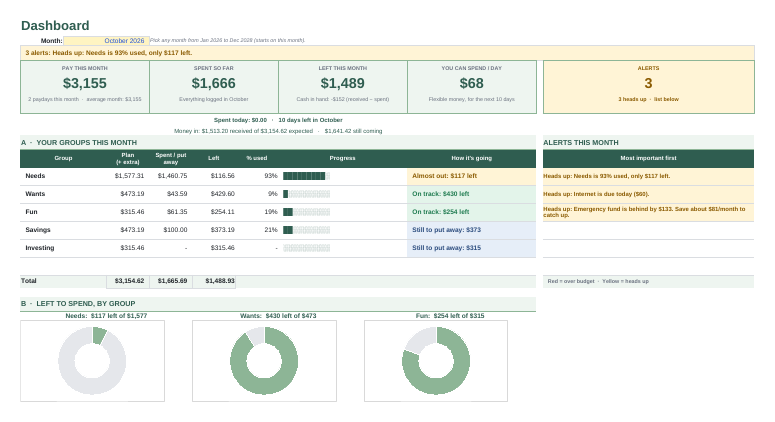
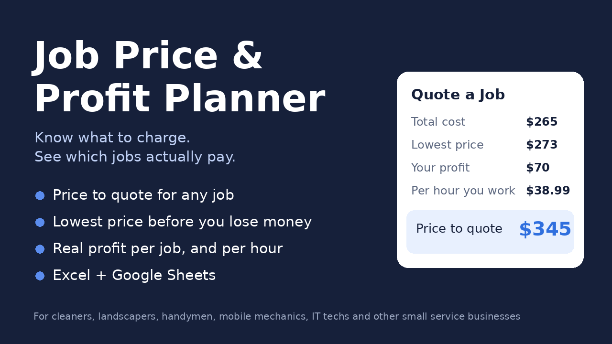
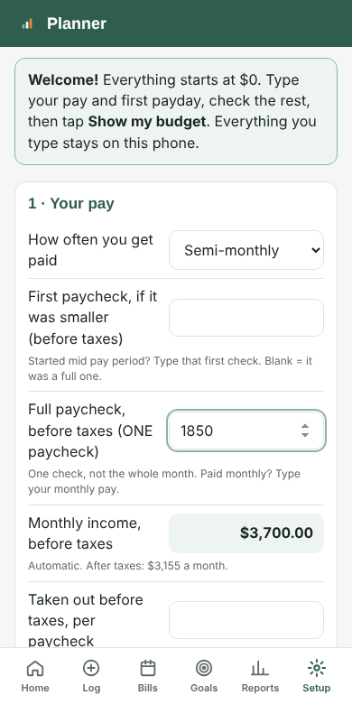
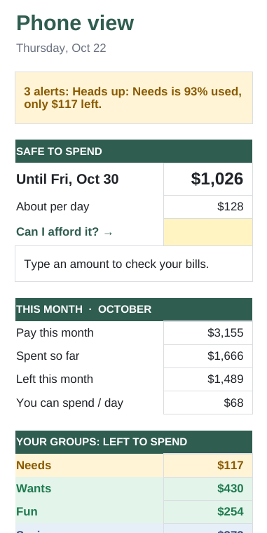
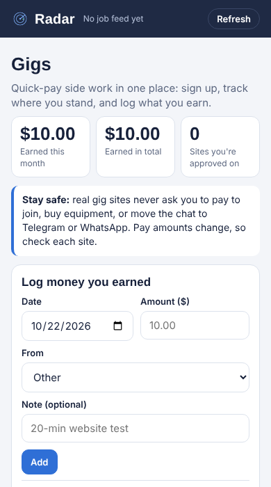

IT and cybersecurity learner in Miami. I build practical tools people use every day: a budget planner for first paychecks, installable web apps, and automations that save hours.
A budget spreadsheet for students and first-jobbers, built by a Python program from one settings file, in 6 color themes for Google Sheets and Excel.

A pricing and profit tool for small service businesses (cleaners, landscapers, handymen, IT techs), built by a Python program that writes 3,000+ formulas.

The same money math as the spreadsheet, as an app you install on your phone. Your data never leaves your device.


My job-search command center. Every morning it finds jobs near me and remote, scores them, flags scams, and turns my saved jobs into tasks in Notion.

One workspace for projects, tasks, calendar and notes, including paydays and bills.
Hands-on IT support practice: installing and setting up Windows, documented step by step.
My first Google Sheets budget (50/30/20). It grew into Paycheck Planner.
In progress: simple security setup guides for small businesses (MFA, backups, Wi-Fi).